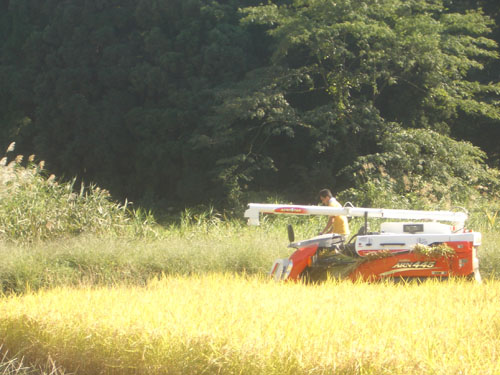

| < | > |
| Muramatsu | [2006-10-03 09:10] |
 first we took the train out of Niigata to a little town called Gosen - nothing much - empty streets - cake shop - boarding a dingy bus we rode on out into nowhereville Muramatsu is a dot on the back of my rice packet - i wanted to see where the blessed bland stuff grew - so we went - we did - a rundown dead on a sunday afternoon town that had once seen GIs in jeeps after the war not knowing where to look or go we just kept on up the road - eventually the little low shut up shops and sleepy houses would thin out and golden fields of rice would appear - that would satisfy my scenario - it did - like clockwork really - we turned up a dead end road and there at the end a small truck - farmers - rice farmers i like to be in Japan - a smile a respectful nod and you can go anywhere - who were these two suspicious looking international rice inspectors with cameras raised - the crinkly old faces just smiled and bobbed their heads back at our konichiwa - the young guy was on the harvester harvesting away - eating up the diminishing rectangle in the middle of the field when you come to where you mean to be in space and time you are there - enjoying the near impossibility of it actually being true - watching it flow past - take a pic - later tell the tale yesterday my lunch had an extra dimension - such are the simple pleasures of the sufficiently rewarded wage earner oops better go - late for work |
|
|
|